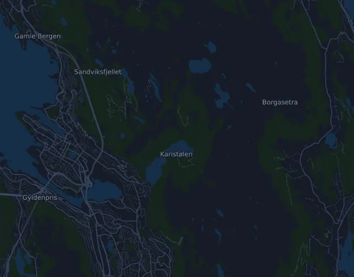

Bergen Fjellmaraton 21 km
- Distancia
- 21,1 km
- Desnivel positivo
- ↑ 866 m
- Punto más alto
- 663 m s. n. m.
- Superficie
- Trail y sendero
- Perfil
- Muy ondulado
- Salida
- 19:30 h
- Avituallamientos
- 1
Perfil de altitud
Prepárate con Mila
Mila es un coach de running en una app. Si añades una carrera a tu plan, el coach planifica tus semanas hasta la salida según tu forma y te da un pronóstico de tiempo y un plan de ritmo, hidratación y energía para el recorrido.

La sesión justa. El día justo.
El recorrido

Sobre el recorrido
Bergen Fjellmaraton es una carrera de trail de 21,1 km (Bergen, Noruega). El recorrido acumula 866 m de desnivel positivo y 881 m de desnivel negativo, 41 m por km, así que es muy ondulado. El punto más alto está a 663 m sobre el nivel del mar y el más bajo a 174 m.
La subida más grande empieza en el km 0,0: 475 m de desnivel en 4,1 km, con un 11,5 % de media, hasta los 663 m. En total, el recorrido tiene 5 subidas de al menos 25 m; la última empieza en el km 16,2.
El organizador prevé un avituallamiento, en el km 10,5.
En la app Mila, el coach describe el recorrido en detalle en tu idioma y planifica tu ritmo y tu avituallamiento.
Subidas
| Empieza en | Longitud | Desnivel | Pendiente | Cima (m s. n. m.) |
|---|---|---|---|---|
| km 0,0 | 4,1 km | 475 m | 11,5 % | 663 |
| km 6,4 | 650 m | 41 m | 6,4 % | 639 |
| km 7,8 | 790 m | 56 m | 7,2 % | 652 |
| km 11,5 | 820 m | 112 m | 13,5 % | 560 |
| km 16,2 | 930 m | 35 m | 3,8 % | 393 |
Antes de la salida
Avituallamientos
| En | Qué hay |
|---|---|
| km 10,5 | agua, bebida isotónica, comida |
Horas de salida
- 19:30 h
Fuente: tifviking.no, consultado el 25 de noviembre de 2026
Tabla de ritmos
Bergen Fjellmaraton 21 km en 1:30:00 – ritmo por km y tiempos de paso
4:16 min/km · km 5: 21:20 · km 10: 42:39 · km 15: 1:03:59 · meta: 1:30:00
Bergen Fjellmaraton 21 km en 1:45:00 – ritmo por km y tiempos de paso
4:59 min/km · km 5: 24:53 · km 10: 49:46 · km 15: 1:14:39 · meta: 1:45:00
Bergen Fjellmaraton 21 km en 2:00:00 – ritmo por km y tiempos de paso
5:41 min/km · km 5: 28:26 · km 10: 56:52 · km 15: 1:25:18 · meta: 2:00:00
Bergen Fjellmaraton 21 km en 2:15:00 – ritmo por km y tiempos de paso
6:24 min/km · km 5: 31:59 · km 10: 1:03:59 · km 15: 1:35:58 · meta: 2:15:00
Los tiempos suponen un ritmo constante de principio a fin. Es pura aritmética, no un pronóstico: en las subidas, entre la gente y en los avituallamientos el ritmo varía.
Preguntas frecuentes
¿Cuándo es Bergen Fjellmaraton 21 km?
Bergen Fjellmaraton 21 km se celebra el jueves, 3 de junio de 2027. Comprueba la fecha y la hora de salida con el organizador.
¿A qué hora sale Bergen Fjellmaraton 21 km?
Según el organizador: 19:30 h.
¿Cuánto mide Bergen Fjellmaraton 21 km y cuánto desnivel tiene?
La carrera tiene 21,1 km, con 866 m de desnivel positivo y 881 m de desnivel negativo. El punto más alto está a 663 m sobre el nivel del mar.
¿Cómo es el recorrido de Bergen Fjellmaraton 21 km?
El recorrido es muy ondulado, con 41 m de desnivel por km de media. Tiene 5 subidas de al menos 25 m; la mayor empieza en el km 0,0: 475 m en 4,1 km. Va de la salida a una meta situada en otro lugar. Se corre por senderos y caminos.
¿Hay avituallamientos en Bergen Fjellmaraton 21 km?
Sí. El organizador prevé un avituallamiento: km 10,5 (agua, bebida isotónica, comida).
¿Cómo reparto el ritmo en Bergen Fjellmaraton 21 km?
Busca un esfuerzo constante más que un ritmo constante: deja que el ritmo baje en las subidas, recupéralo cuando el terreno se allane y contente en los primeros kilómetros. Las subidas más grandes empiezan en el km 0,0, km 6,4, km 7,8 y km 11,5. En Mila tienes un plan de ritmo para este recorrido, según tu propia forma.
Más carreras como esta
Más carreras cerca
- Det Norske Fjellmaraton – Maraton (42,2 km)5 de junio de 2027 · Heimsand (Sjodalen), Beitostølen, Noruega
- Lofoten Ultra-Trail® // 50 miles 87,3 km5 de junio de 2027 · Leknes, Noruega
- Spitsbergen Marathon – Maraton 42,2 km5 de junio de 2027 · Longyearbyen, Noruega
- EcoTrail Oslo – Trail 80 km29 de mayo de 2027 · Oslo (Nedre Foss park), Noruega
- Ålesund Maraton – Helmaraton 42,2 km12 de junio de 2027 · Ålesund, Noruega
- Birkebeinerløpet 21 km12 de junio de 2027 · Lillehammer (Birkebeineren skistadion), Noruega
Prepárate con Mila
La sesión justa. El día justo.
Los datos proceden del archivo del recorrido y de la información del organizador. Comprueba la fecha, las horas de salida y el reglamento con el organizador.
Mila no está vinculada al organizador ni a los patrocinadores de la carrera, ni está patrocinada o avalada por ellos. Los nombres y las marcas pertenecen a sus propietarios. ¿Organizador o titular de derechos? Solicitar un cambio o la retirada